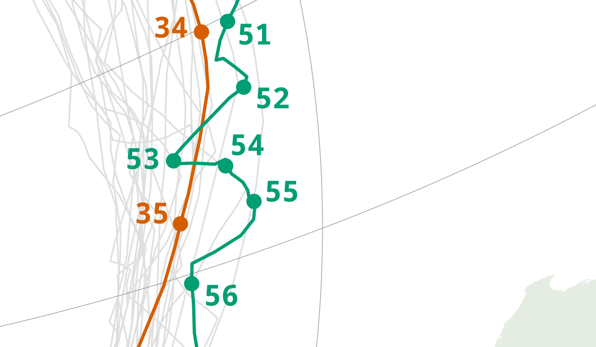

unfinished voyages
Sailing race around the globe
The Vendée Globe is a solo non-stop, unassisted sailing race around the globe. In the 2020/2021 edition, 8 out of 33 participants could not finish the race. This map aims to give a precise overview on their 8 singular journeys.
Different mapping techniques were already used to map this race. Most of them are based on dynamic/interactive maps (eg. Vendée Globe tracking map). I see this project as a design exercise to transpose space and time on a static map. Working on static maps requires method and creativity to display all the necessary information without overwhelming the reader. The projection distorts the distances but gives the perfect overview to grasp the whole race. The colorset is adapted from Bang Wong's color palette suitable for color-deficient readers.
Isabelle Joschke vs Sébastien Destremau, closeup on two trajectories next to the Antarctic Circle

The map was created using Python scripts for the web scraping of skipper position data, QGIS for the mapping part and BoxySVG for the layout. The print format is A1 (594x841mm).
Author: Luka Laval
Supervisor: Manuela Schmidt